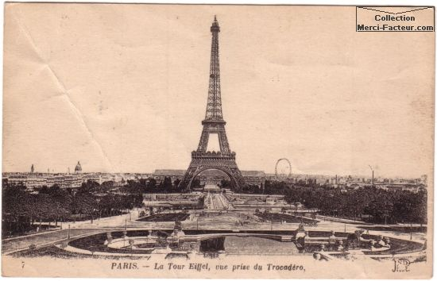
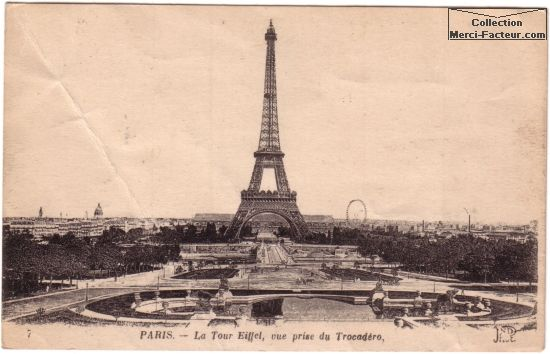

Les origines
L'histoire de Paris remonte au IIIe siècle av. J.-C., lorsqu'une tribu gauloise appelée les Parisii s'est installée sur l'Île de la Cité. Les Romains ont conquis la ville en 52 av. J.-C. et l'ont nommée Lutèce.
L'histoire de Paris remonte au IIIe siècle av. J.-C., lorsqu'une tribu gauloise appelée les Parisii s'est installée sur l'Île de la Cité. Les Romains ont conquis la ville en 52 av. J.-C. et l'ont nommée Lutèce.
Aujourd'hui, Paris est l'une des principales places d'affaires et de culture au monde. Elle est régulièrement classée comme l'une des villes les plus visitées de la planète.
La ville est divisée en 20 arrondissements qui s'enroulent en escargot à partir du centre historique.